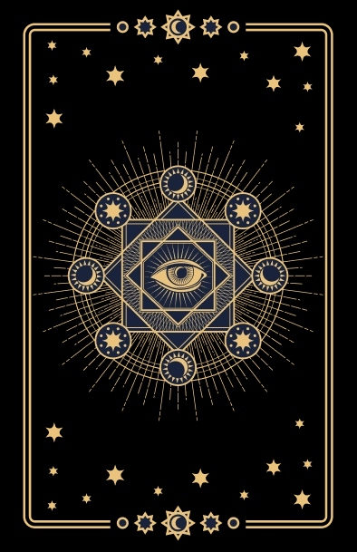

<!doctype html>
<html lang="es">
<head>
  <meta charset="utf-8"/>
  <meta name="viewport" content="width=device-width,initial-scale=1"/>
  <title>Tarot IA — U con Light Sweep (mobile overshoot + card-back.png)</title>
  <script src="https://cdn.tailwindcss.com"></script>
  <script src="https://unpkg.com/react@18/umd/react.production.min.js" crossorigin></script>
  <script src="https://unpkg.com/react-dom@18/umd/react-dom.production.min.js" crossorigin></script>
  <script src="https://unpkg.com/@babel/standalone/babel.min.js"></script>
  <style>
    html, body{
      height:100%;
      margin:0;
      background: radial-gradient(2000px 1400px at 50% 45%, #5f3bb8 0%, #3b1a77 45%, #1a083a 100%);
      color:#fff;
      -webkit-font-smoothing: antialiased; -moz-osx-font-smoothing: grayscale;
      overflow:hidden;
    }
    .screen{
      min-height:100vh;
      width:100vw;
      display:flex;
      align-items:center;
      justify-content:center;
    }
    .stage{
      width:min(1280px,95vw);
      height:min(720px,90vh);
      position:relative;
      overflow:hidden; /* en mobile cortamos lo que sobresale */
      background: transparent;
    }

    :root{ --card-w:128px; --card-h:204px; }
    .card{
      position:absolute; width:var(--card-w); height:var(--card-h);
      border-radius:14px; overflow:hidden;
      /* sin bordes/outline extras: la imagen ya trae el borde dorado */
      transform-origin:50% 85%;
      opacity:0; transform:translateY(110vh) rotate(0deg);
      transition-property:transform,opacity;
      transition-duration:.9s;
      transition-timing-function:cubic-bezier(.2,.8,.2,1);
      will-change: transform, opacity;
      background:#000; /* por si la PNG tiene transparencias en esquinas */
    }
    .card.show{ opacity:1; }

    /* Único efecto: light sweep */
    .card::after{
      content:""; position:absolute; inset:0;
      background: linear-gradient(115deg, transparent 35%, rgba(255,255,255,.28) 50%, transparent 65%);
      transform: translateX(-120%);
      animation: sheen 4.2s ease-in-out infinite;
      mix-blend-mode: screen;
      pointer-events:none;
    }
    @keyframes sheen{
      0%   { transform: translateX(-120%); }
      38%  { transform: translateX(120%); }
      100% { transform: translateX(120%); }
    }

    /* La imagen llena la carta exactamente */
    .card img{
      position:absolute; inset:0;
      width:100%; height:100%;
      object-fit: cover; display:block;
      /* opcionalmente: image-rendering:auto para evitar pixelar */
      image-rendering:auto;
      pointer-events:none;
    }

    /* Breakpoints (tamaño carta; layout es JS) */
    @media (max-width:920px){ :root{ --card-w:110px; --card-h:192px; } }
    @media (max-width:640px){ :root{ --card-w:104px;  --card-h:182px; } }
  </style>
</head>
<body>
  <div class="screen">
    <div id="root"></div>
  </div>

  <script type="text/babel" data-presets="react">
    const { useEffect, useMemo, useRef, useState } = React;

    /* Componente del dorso usando la imagen provista */
    const CardBack = () => (
      
      // Si la ponés en /assets: src="/assets/card-back.png"
    );

    /* Helpers */
    const readCardVars = () => {
      const cs = getComputedStyle(document.documentElement);
      return {
        w: parseFloat(cs.getPropertyValue('--card-w')),
        h: parseFloat(cs.getPropertyValue('--card-h')),
      };
    };
    const useWindowSize = () => {
      const [s,setS]=React.useState({w: innerWidth, h: innerHeight});
      React.useEffect(()=>{
        const f=()=> setS({w: innerWidth, h: innerHeight});
        addEventListener('resize', f);
        return ()=> removeEventListener('resize', f);
      },[]);
      return s;
    };

    /* Layout por breakpoint */
    function computeLayout(stageW, stageH, cardW, cardH, total=22){
      const mx = Math.max(cardW*0.6, 24);
      const myTop = Math.max(cardH*0.35, 16);

      const cx = stageW / 2;
      const rxBase = Math.max((stageW/2) - mx - cardW/2, cardW*1.5);
      const ryBase = Math.max((stageH/2) - myTop - cardH/2, cardH*1.5);

      // Desktop (>=920): U completa, centro alto
      if (stageW >= 920){
        const cy = Math.max(stageH * 0.44, myTop + cardH/2);
        const myBottom = Math.max(cardH*0.5, 20);
        const ry = Math.min(ryBase, (stageH - myBottom - cardH/2) - cy);

        return Array.from({length: total}).map((_, i) => {
          const t = i/(total-1), ang = Math.PI - t*Math.PI; // 180..0
          const x = cx + rxBase*Math.cos(ang);
          const y = cy + ry*Math.sin(ang);
          let rot = (ang*180/Math.PI)-90;
          if(i===total-1) rot += 12;
          return {left:x-cardW/2, top:y-cardH/2, rot};
        });
      }

      // Tablet (640–919): U completa, centro algo más bajo
      if (stageW >= 640){
        const cy = Math.max(stageH * 0.48, myTop + cardH/2);
        const myBottom = Math.max(cardH*0.45, 18);
        const ry = Math.min(ryBase, (stageH - myBottom - cardH/2) - cy);

        return Array.from({length: total}).map((_, i) => {
          const t = i/(total-1), ang = Math.PI - t*Math.PI;
          const x = cx + rxBase*Math.cos(ang);
          const y = cy + ry*Math.sin(ang);
          let rot = (ang*180/Math.PI)-90;
          if(i===total-1) rot += 12;
          return {left:x-cardW/2, top:y-cardH/2, rot};
        });
      }

      /* Mobile (<640): abanico con overshoot lateral (no “cierra” en pantalla) */
      const span = 9;                           // visibles
      const thetaSpan = 130 * Math.PI/180;      // arco visible
      const thetaMid  = Math.PI/2;              // 90° (parte baja)
      const thetaStart= thetaMid + thetaSpan/2; // empieza a la derecha

      const cy = Math.max(stageH * 0.50, myTop + cardH/2);
      const myBottom = Math.max(cardH*0.42, 18);
      const ry = Math.min(ryBase, (stageH - myBottom - cardH/2) - cy);

      // Overshoot horizontal: empuja extremos más allá del viewport
      const overshootPx = cardW * 1.2;
      const rx = rxBase + overshootPx;

      return Array.from({length: span}).map((_, i) => {
        const tt = (span===1)? 0.5 : i/(span-1);   // 0..1
        const ang = thetaStart - tt*thetaSpan;     // derecha -> izquierda
        const x = cx + rx*Math.cos(ang);
        const y = cy + ry*Math.sin(ang);
        let rot = (ang*180/Math.PI)-90;
        if(i===span-1) rot += 10;
        return {left:x-cardW/2, top:y-cardH/2, rot};
      });
    }

    function TarotU(){
      const stageRef=useRef(null);
      const {w:vw,h:vh}=useWindowSize();
      const [run,setRun]=useState(0);

      const [cardVars,setCardVars]=useState(readCardVars());
      useEffect(()=>{ setCardVars(readCardVars()); }, [vw,vh]);

      const {stageW,stageH}=useMemo(()=>{
        const fallback={stageW:1280, stageH:720};
        const el=stageRef.current;
        if(!el) return fallback;
        const r=el.getBoundingClientRect();
        return {stageW:r.width, stageH:r.height};
      }, [stageRef.current, vw, vh, run]);

      const layout = useMemo(
        ()=>computeLayout(stageW, stageH, cardVars.w, cardVars.h, 22),
        [stageW, stageH, cardVars.w, cardVars.h]
      );

      const refs=useRef([]);

      useEffect(()=>{
        refs.current.forEach((el,i)=>{
          if(!el) return;
          el.classList.remove('show');
          const {left, top, rot}=layout[i];
          el.style.left = left+'px';
          el.style.top  = top +'px';
          el.style.transform = `translateY(110vh) rotate(${rot-20}deg)`;
        });
        requestAnimationFrame(()=>{
          refs.current.forEach(el=>{ if(el) el.getBoundingClientRect(); });
          requestAnimationFrame(()=>{
            refs.current.forEach((el,i)=>{
              if(!el) return;
              const {rot}=layout[i];
              setTimeout(()=>{
                el.classList.add('show');
                el.style.transform = `translateY(0) rotate(${rot}deg)`;
              }, i*90);
            });
          });
        });
      }, [layout, run]);

      useEffect(()=>{
        const handler=()=> setRun(v=>v+1);
        document.addEventListener('click', handler);
        return ()=> document.removeEventListener('click', handler);
      }, []);

      return (
        <div ref={stageRef} className="stage">
          {layout.map((pos,i)=>(
            <div key={i+'-'+run} ref={el=>refs.current[i]=el} className="card">
              <CardBack/>
            </div>
          ))}
        </div>
      );
    }

    const root = ReactDOM.createRoot(document.getElementById('root'));
    root.render(<TarotU/>);
  </script>
</body>
</html>
